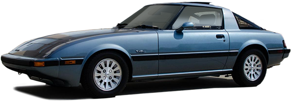
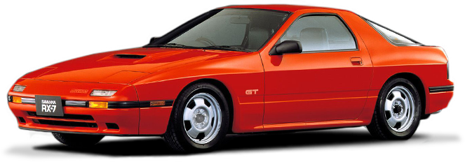
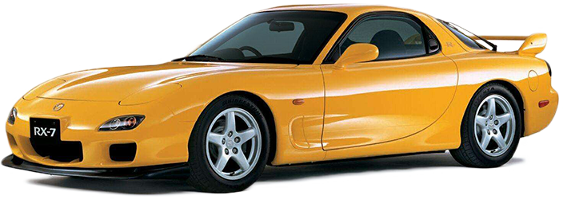

Mazda RX-7
Mazda RX-7 FB (pierwsza generacja, 1978-1985)
- Typ: Sports car
- Silnik: 1.1L silnik rotacyjny Wankla (12A)
- Moc: 100-135 KM (zależnie od wersji)
- Ciekawostka: Pierwsza generacja RX-7, znana z lekkiej konstrukcji i unikalnego dźwięku silnika rotacyjnego.

Mazda RX-7 FC (druga generacja, 1985-1992)
- Typ: Sports car
- Silnik: 1.3L silnik rotacyjny Wankla (13B)
- Moc: 146-200 KM (zależnie od wersji i roku produkcji)
- Ciekawostka: Wprowadzenie turbodoładowania w niektórych modelach, znacznie zwiększające moc.

Mazda RX-7 FD (trzecia generacja, 1992-2002)
- Typ: Sports car
- Silnik: 1.3L podwójnie doładowany silnik rotacyjny Wankla (13B-REW)
- Moc: 255-280 KM (zależnie od rynku i roku produkcji)
- Ciekawostka: Uznawana za szczyt rozwoju RX-7, z zaawansowanym układem sekwencyjnego twin-turbo i ikonicznym designem.
